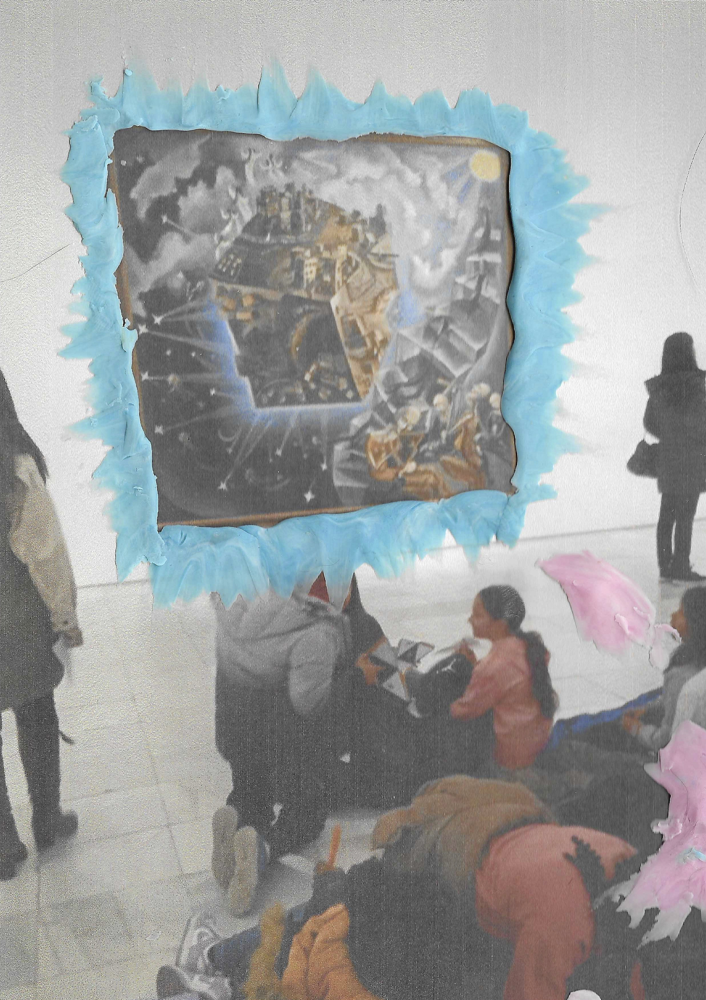
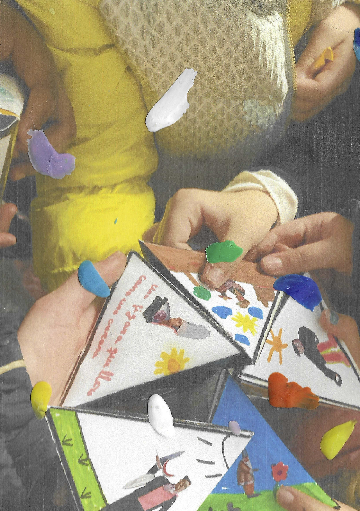

Comprendemos el espacio expositivo como una oportunidad única para activar nuevas formas de mirar, atender y experimentar el arte contemporáneo. Nuestros recorridos proponen una serie de ejercicios abiertos que lanzan claves para situar cada una de las propuestas artísticas que visitamos, así como para trazar un puente capaz de conectarlas con nuestras experiencias personales compartidas.
Más que ofrecer respuestas cerradas, buscamos generar un espacio de conversación donde las experiencias de quienes visitan el museo se pongan en juego. Recorrer una exposición se convierte así en una práctica compartida, atravesada por la escucha y la diversidad de miradas.

